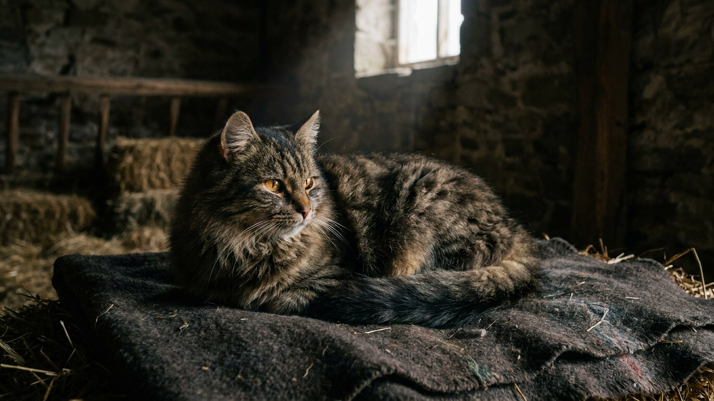

Тибетский мастиф весит до 70 кг и веками охранял монастыри и стада в Гималаях без всякой команды человека — решения он принимал сам. Именно поэтому с ним не работает привычная логика «дал команду — получил исполнение»: это партнёр-охранник, а не служебная собака. Разберём, что стоит за этой самостоятельностью, сколько места и ухода нужно и кому такой пёс точно не подойдёт.
🐾 Ваш питомец — тибетский мастиф?
Заведите профиль в AnimaLife: приложение запомнит породу, возраст и вес и будет подсказывать по уходу именно для неё. Вопросы AI-ветеринару — круглосуточно и бесплатно.
Завести профиль → Завести в MAX →
У вас iPhone? AnimaLife есть в App Store
Порода складывалась тысячелетиями в изоляции высокогорья: тибетский мастиф охранял жилища, монастыри и отары от хищников, часто оставаясь один на один с задачей. Отсюда — крепкое здоровье, устойчивость к холоду и густая «львиная» грива вокруг шеи.
Сегодня это одна из самых узнаваемых и дорогих пород в мире. Но внешность плюшевого медведя обманчива: перед вами серьёзная рабочая собака с охранным инстинктом, а не большая игрушка для фото.
Главная черта породы — независимость. Тибетский мастиф не стремится угодить хозяину любой ценой, как ретривер. Он оценивает ситуацию и действует по собственному разумению, особенно когда «на посту».
Такой характер требует спокойного, последовательного владельца с опытом. Ранняя социализация — знакомство с людьми, звуками, другими животными в первые месяцы — обязательна, чтобы недоверие не переросло в проблемное поведение.
Это собака загородного дома с огороженной территорией, а не квартиры. В четырёх стенах гиганту тесно, а охранять периметр негде — от скуки и тесноты страдают и пёс, и мебель.
Тибетский мастиф — выбор для тех, кто осознанно хочет самостоятельного сторожа и готов под него подстроиться, а не переделать его под себя.
Материал носит информационный характер и не заменяет очную консультацию ветеринара.
🐾 У вас тибетский мастиф?
AnimaLife соберёт уход под породу: к каким болезням есть склонность, что проверять по возрасту, чем кормить и когда пора к врачу. Бесплатно, прямо в мессенджере.
Собрать план ухода → Собрать в MAX →
У вас iPhone? AnimaLife есть в App Store
🐾 Понравился разбор?
Подпишитесь на канал — каждый день разбираем по одному тревожному симптому у кошек и собак: что в пределах нормы, а когда пора к врачу. Подпишитесь, чтобы не пропустить разбор, который может спасти здоровье вашего питомца.